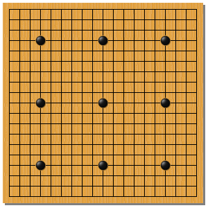

知っておきたいマナー
囲碁は日本においては、伝統文化としての側面もあるため、礼儀作法が重んじられます。
といっても簡単なことばかりです。ここでは最初に知っておきたい、３つのマナーをご紹介します。
礼に始まり礼に終わる
対局の前には「お願いします」と一礼し、対局の後は「ありがとうございました」と一礼します。
もちろん、使った碁石は、必ず自分で片付けましょう。
マッタしない
一度打ち、指が離れた石を打ち直してはいけません。また、打とうとしてやめたり、
碁石をジャラジャラさせるのも、相手の集中を乱すことになり、好ましくありません。
打つ所が決まってから、石を持つということを習慣にすると、良い手も打てるようになります。
対局中に口を出さない
人が対局しているときに、横から口を出してはいけません。
具体的な助言はもちろん、些細なことであっても、口にすることで、対局の妨げとなる場合があります。
対局の慣習
ここでは、対局を公平に行う上で、慣習となっていることをいくつか説明します。
黒番（くろばん）と白番（しろばん）
囲碁で先に打つ側を「先番（せんばん）」といい、基本的には黒が先番です。
そして先番のほうが有利なので、弱い人が黒石を、強い人が白石を使います。
互先（たがいせん）
同じ強さの人同士で打つ対局を「互先」といいます。
互先では、ニギリという方法で黒と白を決めます。
ニギリ
まず年上の人が、いくつかの白石をつかんだまま、盤上に置きます。
その相手は、これが奇数か偶数かを予想します。
奇数だと思えば一つ、偶数だと思えば二つ、黒石を差し出します。
そして握った人が白石を見せて、数を数えて当たっていれば、
予想した人が黒番となります。外れた場合は碁石を交換し、握った人が黒番となります。
コミ
黒は先に打てる分、少し有利なので、これを公平にするために
「コミ」というものがあります。コミは一般的に６目半とされ、これが白に与えられます。
例えば、終局して地を数えた結果、白地１０目、黒地１６目だった場合、
盤面では黒が６目多いのですが、ここからコミを引くので、最終的な結果は、
白の半目勝ちとなります。盤面でも白が多い場合は、そこにコミを加えて、白の勝ちとなります。
つまり黒は先に打てる分、相手より７目以上多く勝たなければ、勝ちにはならない仕組みです。
この半目というのは、引き分けをなくすためのもので、互先以外の、コミを用いない対局では、
地の数が同じになり、引き分けになる場合もあります。これを「持碁（じご）」といいます。
置碁（おきご）
実力に差がある場合は、黒があらかじめ石を配置し、有利な状態から対局を始めます。これを「置碁」といいます。置碁の場合は、白から打ち始めます。
盤上の石を数えるときは、子（シ／モク）という単位を使います。実力の差に応じて、２子～９子の間で調節するのが一般的で、それぞれを「２子局（にしきょく）」や「３子局（さんしきょく）」と呼びます。
